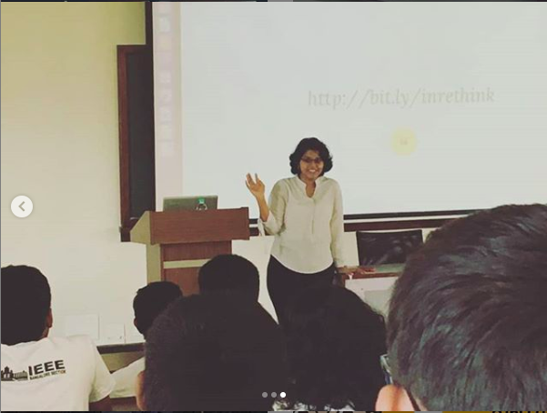
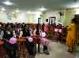

SHE
ACTIVITIES
Since its inception, a number of activities have been conducted. One of the
first steps taken was the creation of an online network of alumnae, under the
name ’Women Engineers Connect’. Starting from the batch of 1990 up to the
graduating batch of 2017, an overwhelming response was noted, with more
than 200 members joining within the first 5 days. A registration drive and
an initial survey was conducted, after which the results were consolidated
and analysed. Alongside, an icebreaking and hand holding session was also
held for the first target group of female students at GCEK.

HACK THE NIGHT
24 Hours women hackathon
A 24 hour Women Hackathon was conducted in collaboration with ICFOSS
– International Centre for Free and Open Source Software (an initiative of
the Kerala Government). This in-house program, included interaction with
alumnae, along with a competitive event that involved building assistive
chatbots.

Resume Workshop
A workshop on Resume Building was conducted in association with the
Rethink Foundation. Through the workshop, it was intended to introduce
participants to the nuances of resume etiquette. The day long programme
worked towards instilling good resume writing skills, with a focus on exploring job descriptions for each persons dream job while still in college, so as to
cultivate the relevant industry skills and create resumes that represent them
better.

LEAD THE LEADERS
One day camp
The flagship event of the first phase of SHE was ’Lead the Leaders’. The
two day residential camp for selected 30 SHE senior members aimed to inculcate the much needed skills for professional excellence as well as personal
competence. Ultimately, the program sought to mentor the attendees to
become leaders for SHE, who would go on to mould the junior members.
SHE CODERS
An online platform for improving the coding skills where alumnae as mentors.